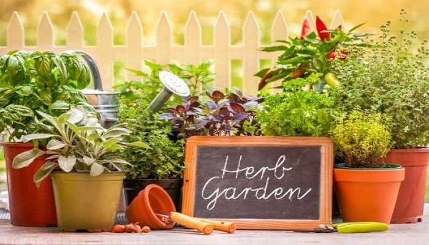

TANAMAN TOGA

Tentang Tanaman Toga
Tanaman obat keluarga (disingkat TOGA) adalah
tanaman hasil budidaya rumahan yang berkhasiat sebagai
obat. Taman obat keluarga pada hakekatnya adalah sebidang
tanah, baik di halaman rumah, kebun ataupun ladang yang
digunakan untuk membudidayakan tanaman yang berkhasiat
sebagai obat dalam rangka memenuhi keperluan keluarga
akan obat-obatan. Kebun tanaman obat atau bahan obat
dan selanjutnya dapat disalurkan kepada masyarakat,
khususnya obat yang berasal dari tumbuh-tumbuhan.
Budidaya tanaman obat untuk keluarga (TOGA)
dapat memacu usaha kecil dan menengah di bidang
obat-obatan herbal sekalipun dilakukan secara individual.
Setiap keluarga dapat membudidayakan tanaman
obat secara mandiri dan memanfaatkannya, sehingga akan
terwujud prinsip kemandirian dalam pengobatan keluarga.

Hari Hari Penting Tentang Lingkungan
| Tanggal | Nama hari |
|---|---|
| 21 Mei | Hari keanekaragaman hayati |
| 5 Juni | Hari lingkungan sedunia |
| 17 Juni | Hari penanggulangan degradasi lahan kekeringan sedunia |
| 10 Agustus | Hari konservasi nasional |